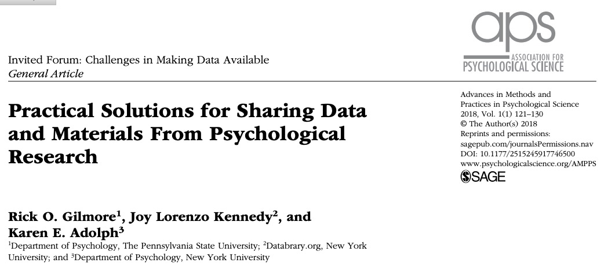
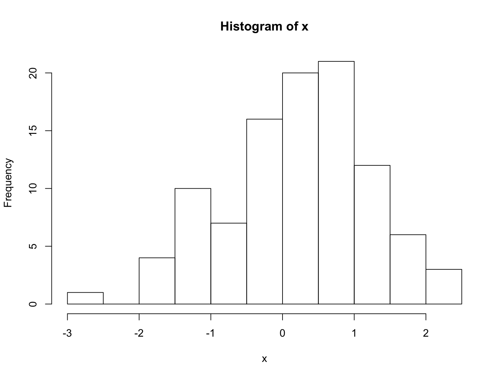

An open science of human health & behavior
IST 597.004 Fall 2019


Agenda
- Prelude
- Some questions to ponder
- The “ethos” of science
- Many solutions
- An open science future…
Questions to ponder
What proportion of findings in the published scientific literature (in the fields you care about) are actually true?
- 100%
- 90%
- 70%
- 50%
- 30%
How do we define what “actually true” means?
Is there a reproducibility crisis in science?
- Yes, a significant crisis
- Yes, a slight crisis
- No crisis
- Don’t know
](http://www.nature.com/polopoly_fs/7.36716.1469695923!/image/reproducibility-graphic-online1.jpeg_gen/derivatives/landscape_630/reproducibility-graphic-online1.jpeg)
Have you failed to reproduce an analysis from your lab or someone else’s?
](http://www.nature.com/polopoly_fs/7.36718.1464174471!/image/reproducibility-graphic-online3.jpg_gen/derivatives/landscape_630/reproducibility-graphic-online3.jpg)
Does this surprise you? Why or why not?
](http://www.nature.com/polopoly_fs/7.36719.1464174488!/image/reproducibility-graphic-online4.jpg_gen/derivatives/landscape_630/reproducibility-graphic-online4.jpg)
](http://www.nature.com/article-assets/npg/nathumbehav/2017/s41562-016-0021/images_hires/w926/s41562-016-0021-f1.jpg)
The ‘Ethos’ of Science
Robert Merton

Wikipedia

- universalism: scientific validity is independent of sociopolitical status/personal attributes of its participants
- communalism: common ownership of scientific goods (intellectual property)
- disinterestedness: scientific institutions benefit a common scientific enterprise, not specific individuals
- organized skepticism: claims should be exposed to critical scrutiny before being accepted
Are these norms at-risk? How or when?

“…psychologists tend to treat other peoples’ theories like toothbrushes; no self-respecting individual wants to use anyone else’s.”
“The toothbrush culture undermines the building of a genuinely cumulative science, encouraging more parallel play and solo game playing, rather than building on each other’s directly relevant best work.”
Solutions
- What is reproducibility?
- What is version control?
- Where/how to share data?
- Tools for reproducible workflows
- What’s preregistration about?
- What are these big replication studies about?
What is reproducibility?
Methods reproducibility
- Enough details about materials & methods recorded (& reported)
- Same results with same materials & methods

Results reproducibility
- Same results from independent study (Goodman et al., 2016)
Inferential reproducibility
- Same inferences from one or more studies or reanalyses
What is version control and why use it?

- thesis_new.docx
- thesis_new.new.docx
- thesis_new.new.final.docx
vs.
- thesis_2019-01-15v01.docx
- thesis_2019-01-15v02.docx
- thesis_2019-01-16v01.docx
Version control systems
- Used in large-scale software engineering
- svn, bitbucket, git
- GitHub
How I use GitHub
- Every project gets a repository
- Work locally, commit (save & increment version), push to GitHub
- Talks, classes, software, analyses, web sites

Where/how to share data?
- Lab website vs.
- Supplemental information with journal article
Data repository

Reproducible workflows
- Data in interoperable formats (.txt or .csv)
- Scripted, automated = minimize human-dependent steps.
- Well-documented
- Kind to your future (forgetful) self
- Transparent to me & colleagues == transparent to others
# Import/gather data
# Clean data
# Visualize data
# Analyze data
# Report findings# Import data
my_data <- read.csv("path/2/data_file.csv")
# Clean data
my_data$gender <- tolower(my_data$gender) # make lower case
...# Import data
source("R/Import_data.R") # source() runs scripts, loads functions
# Clean data
source("R/Clean_data.R")
# Visualize data
source("R/Visualize_data.R")
...Tools for reproducible workflows
Version control
- Scripted analyses (SPSS, SAS, R, Python)
- Jupyter notebooks
- Rmarkdown via RStudio
But my SPSS syntax file already does this
- Great! How are you sharing these files?
- (And how much would SPSS cost you if you had to buy it yourself?)
But I prefer {Python, Julia, Ruby, Matlab, …}
- Great! Let’s talk about R Markdown
Reproducible research with R Markdown
- Add-on package to R, developed by the RStudio team
- Combine text, code, images, video, equations into one document
- Render into PDF, MS Word, HTML (web page or site, slides, a blog, or even a book)
- R Markdown documentation; online tutorial; Mike Frank and Chris Hartgerink’s tutorial
- Similar to Mathematica notebooks, Jupyter notebooks
x <- rnorm(n = 100, mean = 0, sd = 1)
hist(x)
The mean is -0.104749, the range is [-2.6271174, 2.2617879].
Ways to use R Markdown
Ways to use R Markdown
What are registered reports and pre-registration about?

Why preregister?
- Nosek: “Don’t fool yourself”
- Separate confirmatory from exploratory analyses
- Confirmatory (hypothesis-driven): p-hacking matters
- Exploratory: p-values hard(er) to interpret
How/where


Skeptics and converts
- Susan Goldin-Meadow (skeptic), “Why pregistration makes me nervous”
- Mike Frank (former skeptic, now advocate), “Pregister everything”
What are these big replication studies about?
Studies are underpowered
“Assuming a realistic range of prior probabilities for null hypotheses, false report probability is likely to exceed 50% for the whole literature.”
Many Labs
](https://econtent.hogrefe.com/na101/home/literatum/publisher/hogrefe/journals/content/zsp/2014/zsp.2014.45.issue-3/1864-9335_a000178/20150727/images/large/zsp_45_3_142_fig1a.jpeg)
Reproducibility Project: Psychology (RPP)
“…The mean effect size (r) of the replication effects…was half the magnitude of the mean effect size of the original effects…”
“…39% of effects were subjectively rated to have replicated the original result…”
](https://mfr.osf.io/export?url=https://osf.io/fg4d3/?action=download%26mode=render%26direct%26public_file=True&initialWidth=698&childId=mfrIframe&parentTitle=OSF+%7C+F1+-+EffectSizes.png&parentUrl=https://osf.io/fg4d3/&format=2400x2400.jpeg)
](https://mfr.osf.io/export?url=https://osf.io/8pc9x/?action=download%26mode=render%26direct%26public_file=True&initialWidth=698&childId=mfrIframe&parentTitle=OSF+%7C+F4+-+PeerBeliefs.png&parentUrl=https://osf.io/8pc9x/&format=2400x2400.jpeg)
{kind=link}
If it’s too good to be true, it probably isn’t
An open science future…
“The advancement of detailed and diverse knowledge about the development of the world’s children is essential for improving the health and well-being of humanity…”
SRCD Task Force on Scientific Integrity and Openness
“We regard scientific integrity, transparency, and openness as essential for the conduct of research and its application to practice and policy…”
SRCD Task Force on Scientific Integrity and Openness
“…the principles of human subject research require an analysis of both risks and benefits…such an analysis suggests that researchers may have a positive duty to share data in order to maximize the contribution that individual participants have made.”


Stack
This talk was produced on 2019-10-31 in RStudio version using R Markdown and the reveal.JS framework. The code and materials used to generate the slides may be found at https://github.com/gilmore-lab/2019-10-31-ist-597.004/. Information about the R Session that produced the code is as follows:
## R version 3.5.3 (2019-03-11)
## Platform: x86_64-apple-darwin15.6.0 (64-bit)
## Running under: macOS Mojave 10.14.6
##
## Matrix products: default
## BLAS: /Library/Frameworks/R.framework/Versions/3.5/Resources/lib/libRblas.0.dylib
## LAPACK: /Library/Frameworks/R.framework/Versions/3.5/Resources/lib/libRlapack.dylib
##
## locale:
## [1] en_US.UTF-8/en_US.UTF-8/en_US.UTF-8/C/en_US.UTF-8/en_US.UTF-8
##
## attached base packages:
## [1] stats graphics grDevices utils datasets methods base
##
## loaded via a namespace (and not attached):
## [1] compiler_3.5.3 magrittr_1.5 tools_3.5.3 htmltools_0.3.6
## [5] revealjs_0.9 yaml_2.2.0 Rcpp_1.0.1 stringi_1.4.3
## [9] rmarkdown_1.13 highr_0.8 knitr_1.23 stringr_1.4.0
## [13] xfun_0.8 digest_0.6.19 evaluate_0.14